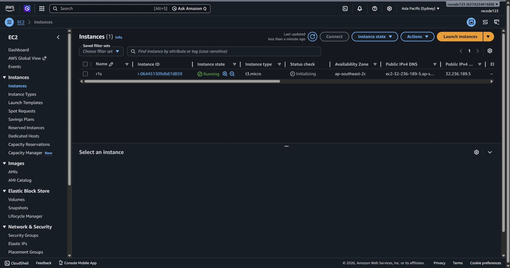
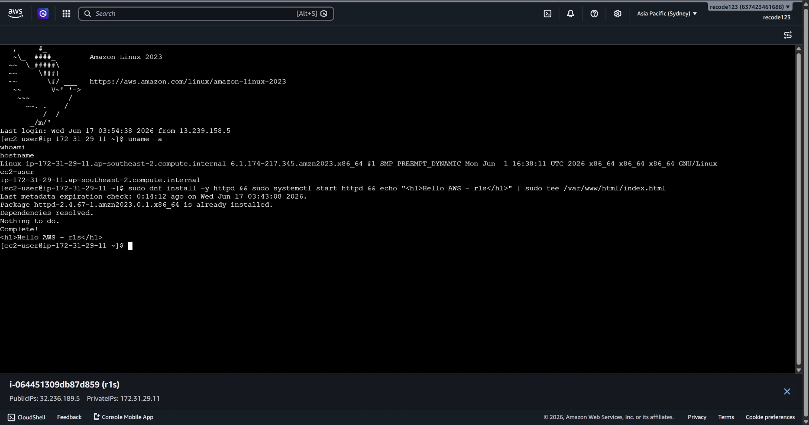
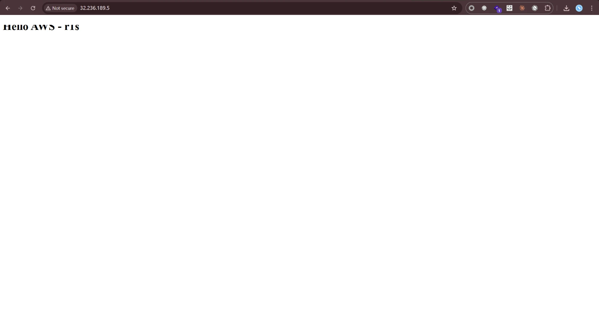

WEEK 02
클라우드 기초 · AWS
AWS 컴퓨팅 — 서버 기초와 Amazon EC2
AWS 컴퓨팅 주차. AMI로 EC2 인스턴스를 배포 → SSH 접속 → 웹 접속 확인 → CloudWatch 모니터링 → 자원 삭제 순서로 실습한다.
개념 요약
- EC2 (Elastic Compute Cloud) — 서버 자원을 인스턴스(가상 머신) 형태로 제공하는 컴퓨팅 서비스.
- 인스턴스 생성 시 반드시 정하는 5가지: AMI / 인스턴스 유형 / 네트워크 / 스토리지 / 보안 그룹.
- 프리 티어는 t2.micro 유형만 매달 750시간 무료. 실습은 t2.micro로 진행한다.
- 외부 공개 3조건: 퍼블릭 서브넷 배치 + 퍼블릭 IP 부여 + 보안 그룹 허용.
stopped는 일시 중지(EBS 과금 지속),terminated는 영구 삭제.
단계 ① AMI로 EC2 인스턴스 배포
- EC2 콘솔 → [인스턴스 시작] 클릭
- AMI 선택 — AWS 기본 AMI(예: Ubuntu) 지정
- 인스턴스 유형 — t2.micro 선택(프리 티어)
- 네트워크 — 배포할 VPC·서브넷 지정
- 키 페어 — 새로 생성 후 프라이빗 키(
.pem)를 PC에 저장 - 스토리지 — EBS 용량 지정
- 보안 그룹 — 인바운드에 SSH(22), HTTP(80) 허용 규칙 추가
- [인스턴스 시작] → 상태가
running이 될 때까지 대기

▲ AWS EC2 콘솔에서 t3.micro 인스턴스(r1s)를 시작해 상태가
Running 이 된 모습.
단계 ② SSH로 인스턴스 접속
프라이빗 키로 접속한다.
chmod 400 키페어.pem # 프라이빗 키 권한 설정(소유자 읽기 전용)
ssh -i 키페어.pem ubuntu@<퍼블릭IP> # 프라이빗 키로 EC2에 SSH 접속

▲ EC2 Instance Connect로 접속해
uname -a·whoami·hostname 으로 Amazon Linux 2023 환경을 확인하고 웹 서버(httpd)를 설치한 화면.
단계 ③ 웹 서비스 접속
인스턴스에 웹 서비스를 설정한 뒤, 브라우저 주소창에 퍼블릭 IP를 입력해 접속을 확인한다(http://<퍼블릭IP>).

▲ 인스턴스의 퍼블릭 IP(
http://32.236.189.5)로 접속하니 EC2에서 띄운 웹 페이지(Hello AWS - r1s)가 응답한다.
단계 ④ CloudWatch 모니터링
인스턴스의 모니터링 탭에서 CloudWatch 지표(CPU 사용률 등) 그래프를 확인한다.
CloudWatch 지표 그래프
(실습 화면 캡처)
단계 ⑤ 리눅스 명령어로 인스턴스 정보 확인
hostname # 호스트 이름 확인
uname -a # 커널·아키텍처 등 시스템 정보
df -h # 디스크 사용량 확인
free -h # 메모리 사용량 확인
단계 ⑥ 자원 전체 삭제
과금을 막기 위해 인스턴스를 종료(terminate) 하고, 남은 EBS 볼륨·키 페어·보안 그룹도 확인해 삭제한다.
stopped만으로는 과금이 멈추지 않는다
stopped는 컴퓨팅 요금만 멈추고 EBS 볼륨에는 과금이 계속된다. 실습 후에는 인스턴스를 terminate하고 남은 자원까지 삭제한다.
막혔던 점
- SSH가 22번 포트에서 timeout → 보안 그룹 인바운드에 SSH(TCP 22) 허용 추가(출발지는 내 IP로 좁힘).
- 브라우저로 웹 페이지가 안 열림 → 인바운드에 HTTP(80) 허용 + 퍼블릭 IP 할당 확인(외부 공개 3조건 충족).
- 프라이빗 키 권한 오류로 SSH 거부 →
chmod 400 키페어.pem후 재접속. - 퍼블릭 IP가 재시작마다 바뀜 → 고정이 필요하면 Elastic IP 할당.